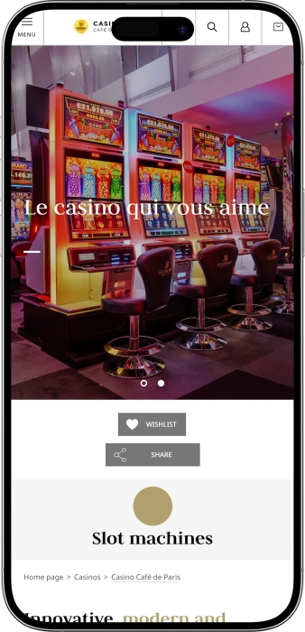

Offre de bienvenue exclusive de
Offre de bienvenue exclusive de
Casino Café de Paris — casino moderne à Monte‑Carlo : slots, roulette, tables et terrasses
Top casinos
Détails du bonus
Casino
Bonus
Note
Tours gratuits
Plus d'infos
Obtenir
Avantages
-
Large choix de machines à sous modernes.
-
Roulette électronique et live, rythme constant.
-
Blackjack et variantes poker, action rapide.
-
Sessions fluides, limites élevées sur jeux.
-
Terrasses pour jouer en plein air.
-
Design contemporain, ambiance lumineuse, sonore.
-
Emplacement idéal au cœur de Monte‑Carlo.
- Le Casino Café de Paris séduit par son mix entre jeux high‑tech, atmosphère animée et expérience accessible. On passe facilement des slots à la roulette puis aux tables, selon son envie du moment. Les terrasses et l’énergie du lieu renforcent l’effet « sortie premium » sans rigidité.
Casino Café de Paris App


À propos Casino Café de Paris
Le Casino Café de Paris se démarque par des jeux à fort potentiel de gains et une cadence de mise très dynamique. Il combine aussi une expérience urbaine vivante avec une touche VIP.
- Jackpots : jusqu’à 500 000€+.
- Slots : gains jusqu’à 10 000×.
- Tables : limites jusqu’à 20 000€.
Le Casino Café de Paris est un casino contemporain au cœur de Monte‑Carlo, apprécié pour son rythme vif et son ambiance lumineuse. Le décor évoque un univers futuriste où la lumière et le son accompagnent chaque partie. L’espace est pensé pour passer naturellement des machines à sous à la roulette et aux tables.

Les amateurs de slots y trouvent de nombreuses thématiques, tandis que les jeux de table apportent une touche de tradition. Le casino convient autant à une visite rapide qu’à une soirée complète. Les terrasses ajoutent une dimension unique, comme si le jeu faisait partie du spectacle de la ville. Le service vise généralement l’efficacité et le confort, pour garder une expérience fluide. Malgré l’animation, l’organisation reste lisible grâce à une circulation intuitive. L’atmosphère y est plus urbaine et énergique qu’un casino classique et solennel. Au final, le Casino Café de Paris rassemble technologie, style et adrénaline dans une même expérience.
Casino Café de Paris : le rythme chic de Monte‑Carlo
Le Casino Café de Paris s’impose comme un casino urbain de nouvelle génération, où la lumière, le tempo et l’esprit de fête dominent. Le décor évoque souvent une esthétique futuriste, portée par des jeux de couleurs et une ambiance sonore dynamique. L’espace est conçu pour que le visiteur repère rapidement ses machines, ses jeux électroniques et ses tables. L’atmosphère convient parfaitement à ceux qui recherchent des sensations fortes sans cérémonial excessif.
Côté horaires, le casino est généralement pensé pour être aussi agréable en journée qu’en soirée. En journée, l’expérience se concentre fréquemment sur les slots et les formats électroniques, tandis que la soirée met davantage en avant les tables et les jeux avec croupiers. Cette organisation permet de planifier sa visite selon son style, de la pause rapide à la nuit complète. Il faut garder à l’esprit que le fonctionnement des zones peut varier selon les jours, d’où une expérience basée sur la flexibilité.
La dimension bar participe à la mise en scène de la soirée : boissons et en‑cas accompagnent le jeu sans le détourner. Autour de la Place du Casino, l’offre est dense, et beaucoup de visiteurs combinent jeu et étapes gastronomiques. Le format du Casino Café de Paris se marie naturellement à un dîner puis à une suite de soirée à proximité. Cela renforce l’impression d’un rythme de station, fluide et continu.
L’environnement hôtelier voisin facilite un séjour complet : dormir au centre permet de rentrer rapidement et de ressortir sans contrainte. C’est idéal pour les sorties tardives ou pour multiplier les passages au casino sur un week‑end. Un autre atout est la possibilité de combiner jeu, shopping et promenade dans un même périmètre. Ce scénario plaît aux visiteurs qui aiment un programme dense et élégant.
La dimension événementielle se ressent à travers l’énergie de la place et la concentration d’impressions : lumières, vitrines, circulation, public, ambiance nocturne. Le casino s’intègre à ce décor en tant que lieu vivant, visité autant pour l’atmosphère que pour le jeu. Les divertissements sont souvent vécus comme un ensemble : jeux, terrasses, boissons, balades et vues. La visite devient ainsi un vrai chapitre de la vie nocturne.
Les mécaniques promotionnelles et bonus, lorsqu’elles existent, tournent généralement autour de la fidélisation : offres de bienvenue, opérations saisonnières, invitations personnalisées. On retrouve souvent une logique d’avantages cumulés via un club, des niveaux et des privilèges additionnels. Il est important de considérer ces bonus comme un plus, jamais comme une promesse de gain. La valeur principale reste le mélange entre confort, prestige et richesse de l’offre de jeu.
Service, paiements et encaissement des gains au Casino Café de Paris
Au Casino Café de Paris, le personnel évolue généralement dans un rythme très « urbain » : l’objectif est de préserver le confort même quand l’affluence augmente. À l’entrée comme dans les salles, les équipes aident à s’orienter, à comprendre les conditions d’accès et à répondre aux questions de base sur les jeux. L’étiquette reste importante : comportement respectueux, échanges corrects avec les croupiers, attention à la politique photo. Le service vise globalement une expérience fluide, avec un minimum de formalités.
Côté langues, un casino central accueille souvent une clientèle internationale : le français et l’anglais sont généralement les plus utiles, et d’autres langues peuvent être comprises selon la saison. Aux tables, les règles sont expliquées de manière standardisée, avec des formulations simples. Pour une session plus engagée, il est pratique d’identifier le point d’information et l’interlocuteur pour les limites. Cette préparation rend l’expérience plus sereine et plus maîtrisée.
Pour la monnaie et les paiements, le scénario le plus courant repose sur l’euro en espèces, complété par l’usage de cartes bancaires pour les services et dépenses annexes, lorsque cela est autorisé. Dans de nombreux casinos, les opérations liées au jeu peuvent suivre des règles spécifiques, distinctes de la restauration ou du bar. Les rechargements via la caisse existent souvent, et les retraits via distributeur peuvent compléter la gestion du budget. Les limites exactes et conditions relèvent des règles internes et de la sécurité.
Les distributeurs et le change se trouvent généralement à proximité dans les zones très touristiques, et les hôtels voisins élargissent les options de retrait. Si vous arrivez avec une autre devise, anticiper les frais et le taux évite de payer le « prix de l’urgence ». Beaucoup de visiteurs prévoient aussi une enveloppe pour les extras : transport, consommations, pourboires, activités. Cette méthode aide à conserver le casino dans une logique de divertissement.
L’encaissement des gains passe le plus souvent par la caisse : pour les montants modestes, c’est rapide, tandis que les montants élevés peuvent impliquer des contrôles d’identité et des vérifications de conformité. Selon les règles et les sommes, un paiement en espèces ou un autre mode convenu peut être proposé. Conserver tickets et documents liés aux opérations est conseillé, pour simplifier tout échange ultérieur. Plus le processus est clair, plus la sortie est confortable.
La fiscalité des gains dépend généralement du statut fiscal du joueur et des règles de son pays de résidence. Sur place, le casino applique surtout ses procédures de paiement, tandis que les obligations de déclaration peuvent incomber au joueur. Pour des montants importants, un avis professionnel est prudent afin d’éviter toute surprise. C’est particulièrement pertinent si l’on prévoit des visites fréquentes et des gains réguliers.
Règles de visite du Casino Café de Paris : tenue, accès et logistique
Le Casino Café de Paris se présente comme un casino moderne avec des règles d’accès claires et une exigence d’allure soignée. L’entrée est généralement réservée aux majeurs et un document d’identité est souvent requis. À l’intérieur, le respect des autres visiteurs est essentiel, surtout dans les zones de tables. La photo et l’usage du téléphone peuvent être encadrés, il est donc préférable de suivre la signalétique et les consignes du personnel. Le dress code s’apparente le plus souvent à du smart casual : propre, élégant, sans look plage ni sport trop marqué. Il est conseillé d’arriver un peu en avance si l’on vise les tables, car l’affluence augmente le soir. Mieux vaut aussi anticiper budget et mode de paiement pour éviter les décisions impulsives. Si vous combinez casino et dîner, planifier sans précipitation améliore l’expérience. L’emplacement se prête bien à une arrivée à pied depuis le centre, et les options de transport dépendent de l’heure. Pour les automobilistes, les parkings à proximité et la circulation peuvent influencer le timing. Globalement, ces règles servent la sécurité, le confort et l’ambiance premium du lieu. En cas de doute, le personnel indique généralement la solution la plus adaptée.
Tenue (ce qui convient le plus souvent) :
- • Smart casual : chemise/polo, pantalon/jean sobre, chaussures fermées ; pour les femmes, robe/jupe/pantalon avec un haut élégant.
- • Minimum du soir : couleurs neutres, sans détails “plage” ni logos sportifs visibles.
Souvent déconseillé :
- • Tenue de plage, tongs, débardeurs, look sport prononcé, vêtements trop usés.
Conditions d’accès :
- • 18+ ; contrôle d’identité ; respect du règlement et des zones de jeu.
Interdictions / limites :
- • Comportement agressif, troubles, prises de vue dans zones interdites, téléphone gênant les autres.
Accès :
- • À pied : idéal pour une soirée au centre.
- • Taxi / transfert : pratique tard le soir ou en programme serré.
- • Transport public : utile en journée pour une visite calme.
Parking
- • Les parkings urbains proches sont souvent plus simples que le stationnement en rue ; en heures de pointe, prévoir une marge.
Programme de fidélité du Casino Café de Paris : niveaux, privilèges et bonus
Le programme de fidélité du Casino Café de Paris se présente souvent comme un club qui récompense la régularité et l’activité au sein du complexe. L’idée centrale est de transformer les mises et les visites en statut, puis ce statut en avantages concrets. Pour le visiteur, cela signifie une amélioration progressive : d’un socle de services à des privilèges plus marqués de type VIP. La carte sert aussi à personnaliser les offres, afin de proposer des promotions cohérentes avec vos jeux favoris. Les mécanismes peuvent différencier slots et jeux de table, car l’attribution des points varie selon les formats. Il faut garder en tête que la fidélité n’est pas une promesse de gain, mais un ensemble d’avantages qui rend l’expérience plus confortable.
L’inscription est généralement simple : présentation d’une pièce d’identité et création d’un profil. Ensuite, le jeu génère des points ou “points de statut”, convertis en privilèges. Les règles d’accumulation peuvent dépendre du type de jeu, de l’horaire et des périodes promotionnelles. Les niveaux suivent le principe “plus d’activité, plus de valeur”. Le club devient donc surtout intéressant pour celles et ceux qui reviennent régulièrement.
Les niveaux donnent souvent accès à un service plus fluide, à des invitations, à des offres sur les divertissements et à un accompagnement plus personnalisé. Aux rangs élevés, l’accent se déplace vers des conditions individuelles : offres dédiées, priorité, zones réservées. Le confort devient aussi important que le bonus. Cela séduit les joueurs qui recherchent un cadre premium et stable.
La partie bonus inclut fréquemment des récompenses d’activité, des campagnes saisonnières et des “journées personnalisées”. Concrètement, cela peut prendre la forme de points bonus, attentions, conditions améliorées sur certains jeux, cadeaux ou invitations. Plus les règles sont lisibles, plus il est simple de planifier ses visites et de viser le niveau suivant. Le programme agit comme un levier long terme.
Conditions d’inscription :
- • 18+ et pièce d’identité.
- • Fiche client (coordonnées pour offres personnalisées).
- • Acceptation des règles d’accumulation et de validité des points.
Exemple de niveaux et comment les obtenir :
- • Classic (0–999 pts/mois) — niveau de base dès l’inscription.
- • Silver (1 000–4 999 pts/mois) — atteint via jeu régulier ; offres plus ciblées.
- • Gold (5 000–14 999 pts/mois) — service prioritaire et privilèges élargis.
- • Platinum (15 000+ pts/mois) — conditions VIP, invitations, packages dédiés.
Exemples de bonus et privilèges :
- • Welcome‑points : +200 pts à l’émission de la carte.
- • Bonus anniversaire : 20€–100€ selon le niveau (valeur jeu/service).
- • Cashback équivalent : 5%–15% en points selon l’activité.
- • Journées boost : points x2 sur des créneaux choisis.
- • Privilèges VIP : priorité, zones dédiées, soirées privées.
- • Attentions : boisson/encas/bonus service selon statut et saison.
Fournisseurs de logiciels
Divertissement et jeux au Casino Café de Paris
Bonus et offres spéciales du Casino Café de Paris : promos, gains, saisons
En dehors de la fidélité, le Casino Café de Paris est souvent perçu comme un lieu où des mécaniques promotionnelles viennent dynamiser l’expérience. Ces offres visent généralement à transformer la visite en “moment” : plus d’adrénaline, mise en avant de nouveaux slots, jours spéciaux. Les bonus s’attachent fréquemment aux machines et aux jeux électroniques, car ils permettent des formats instantanés : mini‑tournois, tirages, cadeaux immédiats. On voit aussi des offres qui relient jeu et détente : avantages sur les consommations, attentions, soirées thématiques. Il est essentiel de comprendre que ces promos ajoutent de la valeur, sans jamais garantir un gain.
Les opérations saisonnières renforcent les périodes festives, lorsque la place et la ville sont particulièrement animées. Elles peuvent prendre la forme de journées “événement” avec chances accrues de remporter un prix, de tirages, ou de classements de tournois slots. Pour le visiteur, c’est pratique : choisir un jour fort en ambiance et profiter d’un scénario plus riche. Les promotions sont souvent concentrées sur la soirée, pour s’intégrer naturellement à la vie nocturne.
Une autre catégorie concerne les joueurs à gros volumes : les offres y sont moins “cash bonus” et davantage orientées service, conditions personnalisées, invitations. Dans ce cadre, la relation devient plus individuelle. Les promos publiques, elles, s’adressent à une audience large et offrent un récit de soirée plus spectaculaire. Pour un contenu SEO, il est important de montrer la variété : slots, tournois, jackpots, campagnes saisonnières, packs jeu + détente.
- • Offre de bienvenue slots : crédit bonus 10€–50€ au premier passage (exemple).
- • Tournois machines à sous : dotation 2 000€–20 000€ (exemple).
- • Jackpots / progressifs : gains possibles jusqu’à 500 000€+ (potentiel indicatif).
- • Happy Hours / heures boost : multiplicateur x2 sur certains jeux.
- • Cadeaux “instant win” : valeurs 5€–200€ (jeu/service).
- • Campagnes saisonnières : prix 1 000€–10 000€ et packs cadeaux.
- • Packs “jeu + détente” : 1 boisson offerte ou formule (exemple).
- • Offres high‑limit : limites et avantages service (sur mesure).
Jeux populaires du Casino Café de Paris : des slots aux tables live
Le Casino Café de Paris attire ceux qui aiment la variété et un rythme de jeu soutenu. Les machines à sous restent souvent au centre de l’expérience, grâce à un démarrage immédiat, une mécanique simple et une grande diversité de thèmes. La roulette électronique apporte une cadence rapide, avec des mises en continu et des résultats sans longues pauses. Pour une ambiance plus traditionnelle, les jeux de table offrent stratégie, émotions et interaction avec le croupier. Le blackjack est souvent vécu comme un équilibre entre calcul et adrénaline, tandis que la roulette devient un rituel de soirée. Les formats poker ajoutent une dimension compétitive, même lorsqu’il s’agit de variantes “Ultimate”. Les jeux en terrasse renforcent l’impression de spectacle urbain.
En soirée, l’intérêt pour les tables et les versions “live” augmente, car elles amplifient la sensation d’événement. Les visiteurs pressés privilégient slots et électronique, tandis que ceux qui s’installent plus longtemps basculent vers les tables. La disponibilité de certaines tables peut varier selon l’affluence et l’horaire. L’essentiel des jeux populaires reste néanmoins stable et lisible pour une clientèle internationale. Pour un texte SEO, citer les catégories et les noms clés améliore la couverture des requêtes. Ci‑dessous, les formats les plus recherchés.
- • Machines à sous : lancement rapide, thèmes variés, jackpots et bonus.
- • Vidéo‑poker : entre slot et logique poker, rythme plus posé.
- • Roulette électronique : cadence accélérée, accessible aux débutants.
- • English Roulette : roulette européenne classique, dynamique connue.
- • Live Roulette : croupier en direct, ambiance plus immersive.
- • Blackjack : stratégie, gestion du risque, table iconique.
- • Texas Hold’em Ultimate Poker : variante poker, sensation de compétition.
Mises au Casino Café de Paris : minimums et maximums par jeu
Le Casino Café de Paris propose une amplitude de mises importante, ce qui convient autant aux débutants qu’aux joueurs confirmés. Les mises minimales se trouvent le plus souvent sur les machines et les jeux électroniques, idéals pour démarrer avec un budget léger. Les mises maximales montent généralement plus haut sur les tables et les zones high‑limit, recherchées par les joueurs à gros volume.
| Jeu / catégorie | Mise minimale | Mise maximale |
|---|---|---|
| Machines à sous (standard) | 0,10€ | 10€ |
| Machines à sous (high‑limit) | 5€ | 100€ |
| Vidéo‑poker | 1€ | 500€ |
| English Roulette (table) | 5€ | 10 000€ |
| Live Roulette | 10€ | 20 000€ |
| Blackjack | 10€ | 20 000€ |
| Texas Hold’em Ultimate Poker | 5€ | 5 000€ |
Divertissements au Casino Café de Paris : vie nocturne, événements et rythme show
Le Casino Café de Paris est apprécié non seulement pour le jeu, mais aussi pour sa place dans la vie nocturne de Monte‑Carlo. Il s’intègre souvent à un “parcours de soirée” mêlant jeu, cocktails et ambiance de la place. Les divertissements réguliers se lisent dans la dynamique : musique, lumières, foule élégante et impression de fête urbaine. Le soir, l’espace paraît plus événementiel, parfois même sans spectacle formel, car la salle devient une scène en soi.
Beaucoup de visiteurs aiment la façon dont le casino se connecte aux formats nocturnes proches : culture du bar, rencontres tardives, suite de soirée dans les lieux voisins. On vient aussi pour l’effet “présence”, le public, l’énergie du centre. Pour un loisir régulier, les scénarios répétables comptent : certains jours plus animés, soirées thématiques, heures de tournois slots, promotions créant un prétexte de visite. Cela construit une habitude et un rythme lifestyle.
Les événements spéciaux renforcent généralement les périodes fortes : semaines festives, grands rendez‑vous urbains, dates symboliques. L’univers visuel peut évoluer, des éléments thématiques apparaissent et l’affluence augmente. Pour le visiteur, cela signifie plus d’intensité et plus d’occasions de combiner jeu et expérience sociale. Si l’on cherche une vibe club et nuit, mieux vaut viser la soirée, quand l’ambiance est la plus dense.
La valeur divertissement du Casino Café de Paris réside dans sa dimension globale : on ne “va pas au casino”, on “sort le soir”, et le casino devient un chapitre marquant. C’est ce qui attire ceux qui aiment les sorties courtes mais riches. Même une session de jeu brève peut devenir un vrai moment si l’on choisit le bon timing, la terrasse et une pause cocktail. Ci‑dessous, les formats typiques associés à ce style de casino.
- • Nuit de jeu (slots + électronique) : format rapide, démarrage immédiat.
- • Zones de tables : adrénaline plus “théâtrale”, esprit classique.
- • Terrasses : jeu et détente en plein air, vue urbaine.
- • Soirées thématiques : ambiance renforcée selon jours/saisons.
- • Tournois slots / heures événement : dimension compétitive et rythme.
- • Pause bar : cocktails comme partie du scénario de soirée.
- • Suite de nuit à proximité : possibilité de prolonger dans le centre.
Bars, restaurants et séjour autour du Casino Café de Paris : composer la soirée parfaite
Autour du Casino Café de Paris, la détente se construit sur une logique “tout à portée de main” : jeu, cocktails, dîner et balade s’enchaînent naturellement. C’est idéal pour ceux qui veulent vivre le rythme du centre sans perdre du temps en déplacements. Beaucoup commencent par une étape gastronomique, poursuivent au casino pour les slots ou la roulette, puis font une pause bar. Ce parcours équilibre adrénaline et confort, sans transformer la soirée en marathon.
La culture du bar dans ce périmètre prolonge souvent l’ambiance du casino : boissons, en‑cas, discussion, respiration. Une pause cocktail aide à réduire les variations émotionnelles et rend l’expérience plus agréable. Les restaurants servent fréquemment d’ancrage : on fixe l’heure du dîner et le casino devient un chapitre entre promenade et suite de nuit. Cela facilite l’organisation et aide à maîtriser le budget.
Les hôtels voisins ajoutent une couche de confort : retour rapide en chambre, changement de tenue, puis retour dans l’ambiance. Pour un séjour de plusieurs jours, ce modèle est parfait, car on peut varier les scénarios sans changer de zone. L’avantage majeur est la sensation de prestige et de simplicité, avec tout à quelques minutes. Le Casino Café de Paris devient alors un véritable centre de gravité pour la soirée.
Au final, la détente ici ne se limite pas au jeu : elle inclut le décor, les points de vue, les terrasses, les lumières de la place, le public, l’esprit “scène” de la ville. Pour un bloc de site, il est pertinent de raconter une soirée complète : gastronomie, bar, balade, casino, prolongation nocturne. Ci‑dessous, des formats de détente à associer logiquement à la visite du Casino Café de Paris.
- • Brasserie à proximité : dîner, ambiance “voir et être vu” avant le jeu.
- • Bar à cocktails : pause entre sessions, rythme de nuit.
- • Terrasses du casino : détente en plein air sans casser le scénario.
- • Pause café : format journée avant/après une session slots.
- • Hôtels du centre : logistique fluide, retours rapides.
- • Zone de promenade : “reset” court entre dîner et jeu.
FAQ
Oui, beaucoup viennent pour l’ambiance et le décor. Il faut néanmoins respecter les règles d’accès et la tenue.
En général non, la visite est possible sans réservation. L’inscription sert surtout au club ou à certaines offres spéciales.
En principe non, mais le respect du règlement est obligatoire. En cas de non‑respect, l’accès peut être limité.
Commencez par les slots ou la roulette électronique, puis passez aux tables. Le personnel peut expliquer les bases dans le cadre de l’étiquette.
Non, ce n’est pas obligatoire, mais cela peut se faire en signe d’appréciation. Cela dépend de votre préférence.